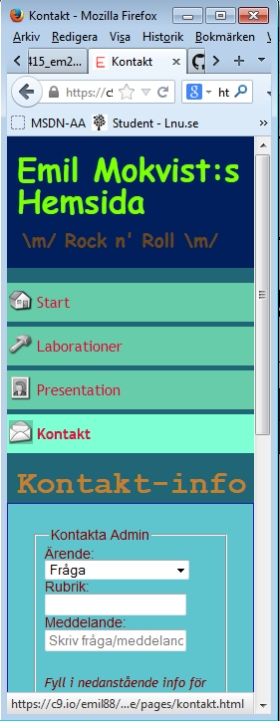

Länk till gamla startsidan.
Här är den gamla startsidan: Emils Hemsida (gamla)
Den "nya" startsidan är den du ä på nu! Det som är nytt är väldigt mycket av källkoden, som nu skrivits om med HTML 5.
Blogginlägg skrivet av Emil, 2014-01-27
Här är den gamla startsidan: Emils Hemsida (gamla)
Den "nya" startsidan är den du ä på nu! Det som är nytt är väldigt mycket av källkoden, som nu skrivits om med HTML 5.
Blogginlägg skrivet av Emil, 2014-01-27
Detta är ett exempel på blogginlägg med "article"-taggen. Nedanför kommer vad som ska likna kommentarer på blogginlägget.
Du har fel! MVH elak besökare ^^
Jag tycker det blev mycket snyggare på hemsidan nu.
MVH, snäll besökare : )
Blogginlägg skrivet av Emil, 2014-01-26
Jag kan äntligen stolt presentera min sida för mobila enheter. På en mobil enhet visas exakt samma sida som man annars ser på datorn. Skillnaden finns i CSS-koden, där jag gjort förändringar som endast syns om enhetens/mobilens skärm är 480 pixlar eller mindre.
Hur har jag resonerat? För mobiltelefoner tycker jag det blir snyggare om allt går att läsa uppifrån och ner; Ingen info ska alltså finnas i sidled. Användaren behöver bara rulla sidan uppåt och nedåt, horizontellt går det inte att förflytta sig på sidan.
Tabellen på Laborations-sidan och formuläret på Kontakt-sidan har varit de tuffaste bitarna. För formuläret så bestämde jag mig i slutändan för att göra ett antal radbrytningar, det blev plötsligt mycket snyggare för både större skärmar som mobiltelefoner.
Kort å gott så var det en mycket utmanande laborationsuppgift men också en av dem mest givande. I och med att användandet av mobiltelefon just för surfande ökat så mycket senaste åren och kommer troligen fortsätta öka så behöver en programmerare förstå det som laborationen gått ut på. Tycker därför det var givande och jäkligt roligt. ;-)
Emil Mokvist, over and out!
Skrivet av Emil, 2013-12-17
Redo att redovisa nästa laboration.
Skrivet av Emil, 2013-12-09
Äntligen klar med Labb 2.
Planerar att redovisa på Onsdag
Skrivet av Emil, 2013-10-21
Under Mars månad förra året var jag i Egypten med mina föräldrar, mina bröder och min farfar. Vi firade min pappa som fyllde 50 år.
 Vi njöt av sol och bad varje dag. Vädergudarna svek oss inte en enda dag. Jag tycker det bästa med Egypten var det glasklara havet och korallreven bara några meter ut från stranden. Otroligt fascinerande! Jag hade mycket nytta av lektionerna i Fridykning jag gått på när jag var yngre. Att simma omkring bland medelhavets fiskar (exklusive hajar) och bara betrakta allt; korallen, fiskarna, ja hela naturen under vattnet... Tror inte att det finns något som är mer harmoniskt.
Vi njöt av sol och bad varje dag. Vädergudarna svek oss inte en enda dag. Jag tycker det bästa med Egypten var det glasklara havet och korallreven bara några meter ut från stranden. Otroligt fascinerande! Jag hade mycket nytta av lektionerna i Fridykning jag gått på när jag var yngre. Att simma omkring bland medelhavets fiskar (exklusive hajar) och bara betrakta allt; korallen, fiskarna, ja hela naturen under vattnet... Tror inte att det finns något som är mer harmoniskt.
Efter att solguden gått till sängs gick vi upp till restaurangen och åt mängder av god mat. Efter det blev det också ett och annat glas öl. Ibland tog vi också en promenad runt området också och betraktade kvällen.
På pappas födelsedag hade vi snackat lite med personalen på den Italienska restaurangen på hotellet. Vi tänkte vi skulle överraska honom med att dem kom fram och sjöng lite. Men vi blev lika överraskade och schockade som farsan; Dem sjöng högt och livligt och drog upp farsan för att dansa med honom. Men det var lugnt, han hade ju bara fyllt 50 år ung så han hade sina "dance-moves" kvar! :D
Så slutsatsen är: En av dom bästa semesterresorna jag varit iväg på, och jag tror allihop känner likadant. Mycket kul och samtidigt avslappnande. Jag kom tillbaks till Sverige efter en vecka, fulladdad av energi.
Skrivet av Emil, 2013-10-21
Nu är även formuläret på kontakt-sidan klart och verkar fungera mot testservern. Laboration 1 känner jag mig klar med och är redo att redovisa!
Skrivet av Emil, 2013-09-23
Denna trailer har laddats ner från:
Big Buck Bunnys hemsidahttp://www.bigbuckbunny.org
Skrivet av Emil, 2013-09-20
Lagt in diverse bilder på sidan. Gjorde bland annat denna halvdanska flaggan, inspirerad av min bror som är halvdansk!

Skrivet av Emil, 2013-09-20
På denna blogg kommer jag skriva lite angående laborationerna och publicera det som jag producerar.
Detta är mitt första inlägg.
Skrivet av Emil, 2013-09-18